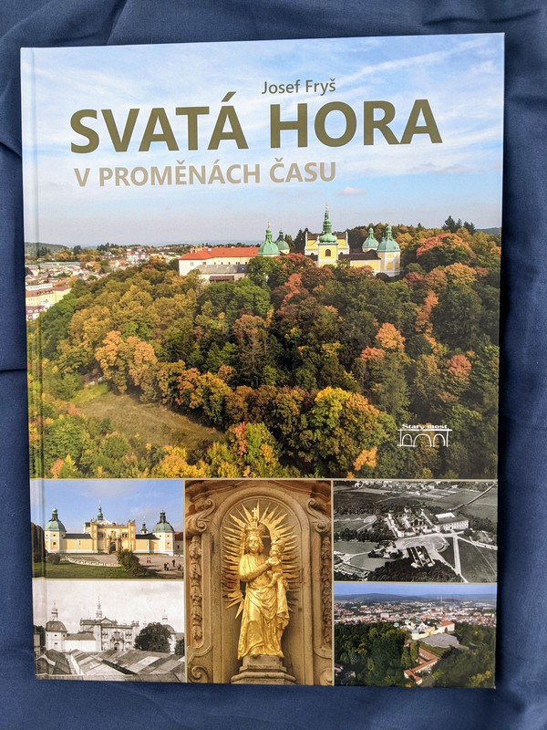
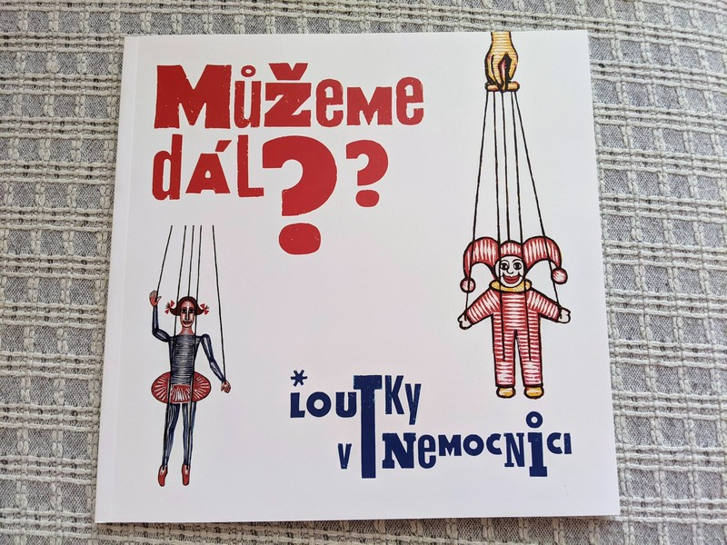
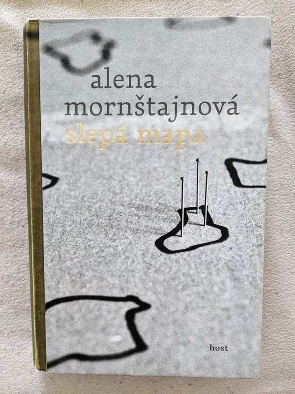
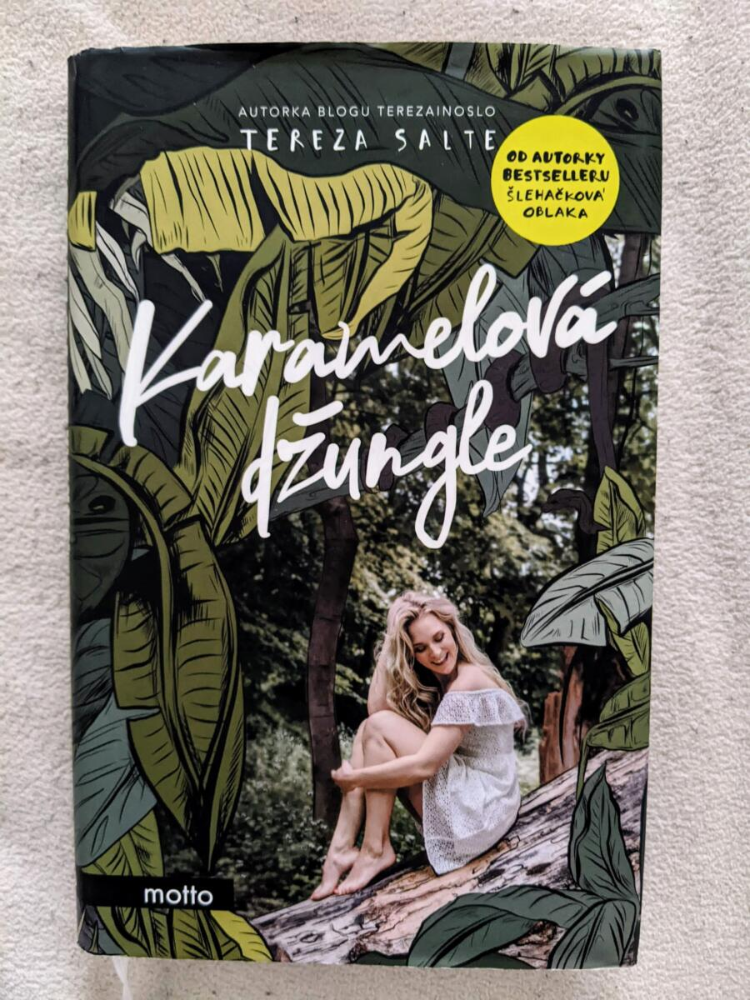
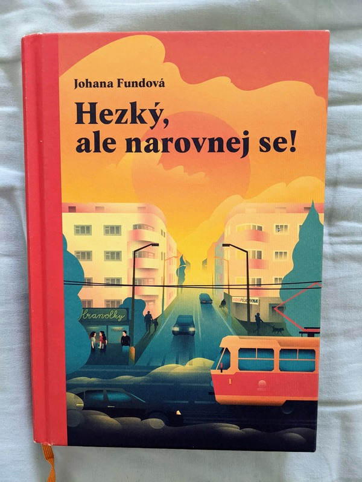
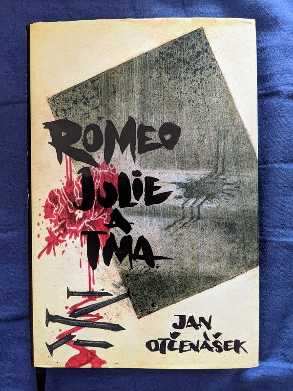

Tenhle podzim byla nálož. A to nejen literární :-) Máme za sebou loučení s našim starým domovem, stěhování i rodinnou dovolenou v Praze. Kus práce je za námi, ale stále nás toho ještě tolik čeká. Těší mě ta cesta a zároveň si teď víc než kdy jindy užívám chvilky klidu, kdy si můžu sednout, začíst se a na chvíli utéct do jiné reality. A tak tu dnes máte můj literární výběr pro tento podzim ;-)
Josef Fryš - Svatá hora v proměnách času
Se stěhováním logicky souviselo i redukování věcí a musím říct, že jsem se tentokrát snažila být nekompromisní i co se týče knih a celou řadu jsem jich poslala přes Reknihy do oběhu. To bude i případ této obrazové publikace, která jistě ještě může udělat radost kdejakému milovníkovi umění, pro které je tato kniha určena především. K mému zklamání se v ní nedočtete žádné historické reálie či informace o původu a vzniku tohoto poutního místa, ale opravdu spíše informace o jeho obrazech, sochách a celkové architektuře.

Můžeme dál? - Loutky v nemocnici
Útlá knížečka plná malých i velkých osudů - tak by se možná dala ve stručnosti shrnout tato publikace složená z příběhů, které vypráví členové souboru Loutky v nemocnici. Knížka vznikla u příležitosti 15 let činnosti spolku, který přináší do nemocnic a léčeben loutkové divadlo. Příběhy malých i seniorních pacientů, které přišel soubor do nemocnice rozveselit nebo jen přivést na jiné myšlenky či vytrhnout z neveselé reality, jsou veselé i dojímavé.

Alena Mornštajnová - Slepá mapa
Při poslední objednávce z Reknih jsem šla celkem na jistotu a sáhla po prvotině dnes asi nejčtenější současné české autorky. Slepá mapa možná mezi čtenáři nevzbudila takový rozruch, jako pozdější bestseller Hana, ale přesto je tento generační román se třemi hlavními ženskými hrdinkami mimořádně zdařilou prvotinou. Tři generace žen - babička, matka a dcera - na pozadí bouřlivých dějin naší země v uplynulém století, zní možná jako téma, které tady už bylo, ale autorka je skvělou vypravěčkou, příběh nikde nedrhne, naopak naprosto přirozeně plyne a baví. Nejvíce mne chytnul za srdce životní osud Alžběty, která i navzdory různým osobním tragédiím zůstala po celý život silnou a pragmatickou ženou. Naopak jsem naprosto nesouzněla s její dcerou Anežkou, která pro mne byla takovou ponurou a odevzdanou postavou, která si život ničila a komplikovala sama. Možná i proto jsem byla tak nějak rozladěná ze závěru románu, který jakoby byl do příběhu dosazen někým jiným - zkrátka mi nekorespondoval s celkovým vyzněním knihy. A asi jsem úplně nepochopila, proč se román jmenuje Slepá mapa - trochu mi to připomíná písničky bratří Nedvědů, které jsou vždycky pojmenované podle nějakého random slova, které se jednou jedinkrát vyskytne někde v textu písně :-D Ale to je jen takový povzdech na okraj :-D Jinak je rozhodně Slepá mapa výborná a stojí za přečtení.

Tereza Salte - Karamelová džungle
Po vydařených Šlehačkových oblacích další literární počin blogerky Terezy Salte, na který jsem byla moc zvědavá. Přestože literárně se mi autorčina prvotina líbila mnohem více a vyznívala z ní i sympatičtěji, než z jejího pokračování, musím ocenit, že v Karamelové džungli se Tereza čtenářům mnohem více otevírá a nechává je nahlédnout do svého nitra i na některá obzvlášť těžká témata. Nelehké muselo být vzpomínat na šikanu, kterou zažívala na základní škole, stejně jako otevřeně promluvit o tom, že její máma spáchala sebevraždu. V těchto pasážích “na dřeň” před čtenáři najednou odhaluje úplně jinou tvář, než jakou je ta usměvavá a sebevědomá byznysmenka, na kterou jsou sledující jejího Instagram kanálu zvyklí. A je to silné čtení. Terezin životní příběh sleduji i dál a už teď je jisté, že by vydal na další literární pokračování. Tak uvidíme, zda se ho někdy v budoucnu dočkáme.

Johana Fundová - Hezký, ale narovnej se!
O této knize jsem slyšela, že je must-read pro všechny devadesátkový děti. A kdo jsem já, abych to rozporovala a nevyzkoušela na vlastní kůži :-D? Tři (bývalí) spolužáci, dvě časové linie a tři diametrálně odlišné životní osudy. Kdybychom všichni byli literárním talentem a múzou políbeni, asi by každý z nás mohl vyprávět takový příběh. Popis dětství v devadesátkách byl opravdu trefný (chybělo mi tam snad jen to, aby hlavní hrdinky poslouchaly Luneticy :-D!) a nostalgický. Pak už je to vlastně spíš smutné (byť hezky napsané a místy i napínavé) čtení, protože čtenář vidí, že ani jeden z hrdinů nežije tak úplně život, který by si přál, protože je uvízlý v pasti mnohdy nezdravých až patologických vztahů, ze kterých se nedokáže vymanit. Pokud tedy hledáte nějaké oddechové čtení, co vám zvedne náladu, toto bych spíše nedoporučila.

Jan Otčenášek - Romeo, Julie a tma
Krátký, silný a dnes už klasicky příběh o lásce studenta Pavla a židovské dívky Ester, odehrávající se v době heydrichiády, jsem naposledy četla v maturitním ročníku. Pak jsem knížku někomu půjčila a už se mi nevrátila, tak jsem ji po letech koupila na Reknihách, protože jsem zatoužila mít ji ve své domácí knihovně. I po těch letech se mi příběh moc líbil. Přestože je to novela s tak těžkým tématem, troufám si říct, že vás neuvrhne do deprese. Naopak vás na chvíli vtáhne do příběhu, v němž i navzdory kulisám budete do poslední chvíle s mladickým optimismem věřit, že všechno dobře dopadne.
